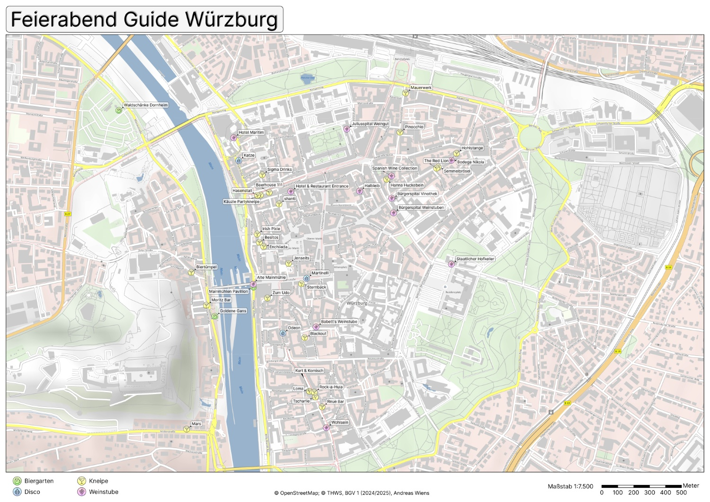
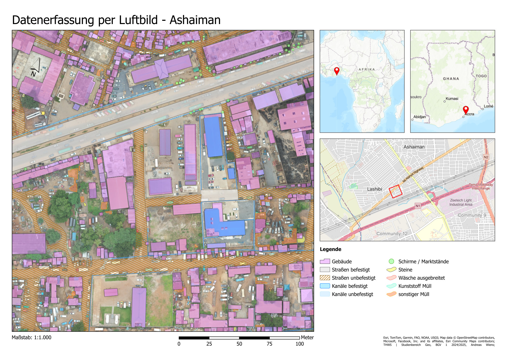
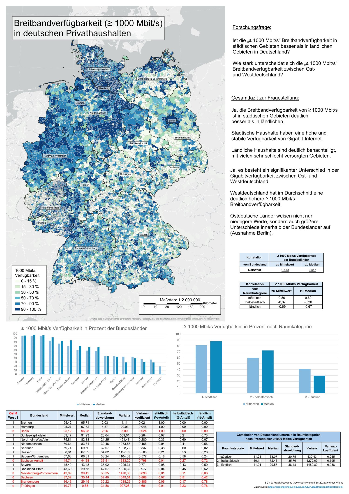

ArcGIS Pro

Stadtkarte Würzburg (Semester 1)
Eine in ArcGis Pro erstellte Printkarte von Würzburg
mit vorher aufgenommenen Locations als Punktobjektdaten.

Datenerfassung per Luftbild (Semester 1)
Ziel der Projektes war es Geodaten in einem bestimmten Bereich in Ashaiman zu erfassen und zu Digitalisieren,
für eine spätere Machine-learning Auswertung.

Statistikprojekt zur Breitbandverfügbarkeit (Semester 2)
Aufarbeitung, Auswertung, Visualisierung und Diagnose von Metadaten
im Bezug auf die Internet-Breitbandverfügbarkeit von Privathaushalten in Deutschland.